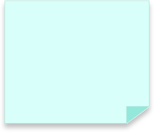
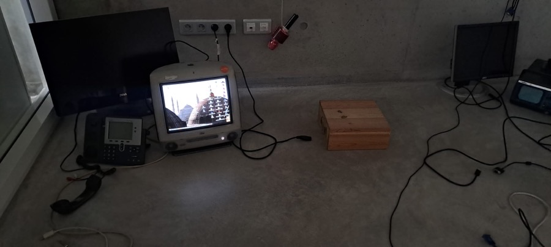
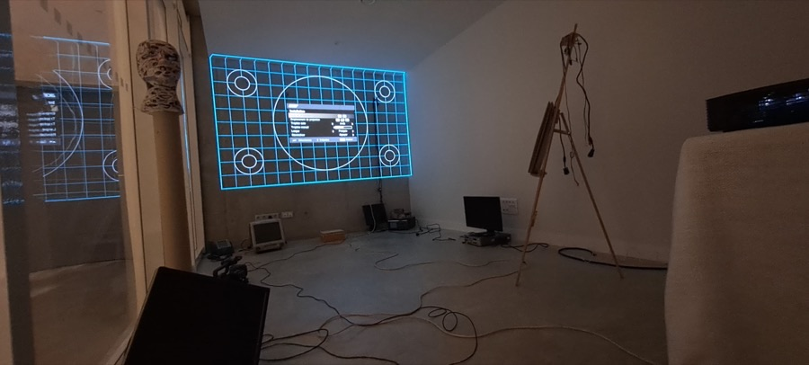
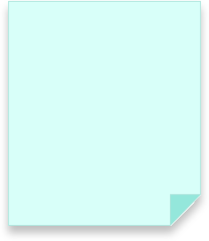
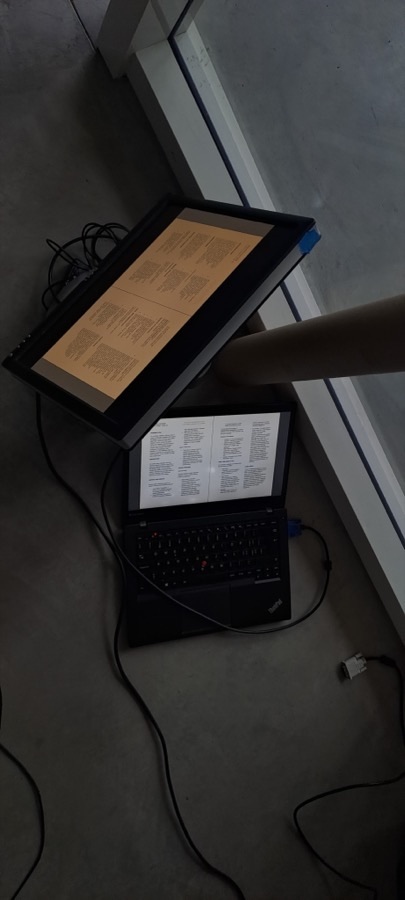

Speaker’s Kitchen reimagines the ethos of Hyde Park’s Speaker’s Corner, blending its historic spirit of free speech with technological artistry inspired by the Fluxus movement and the artists of the Kitchen in the 1970s.





In collaboration with Wenting BAI and Mihai BRANGA-PEICU
Using a Bluetooth microphone, a Raspberry Pi, and Processing.js, participants’ voices are transformed into erratic, evolving visuals reminiscent of Ryoji Ikeda’s distorted binary forms. Projected in real time onto a large display, the installation merges individual expression with communal engagement.
Anis Slimani
Inter-disciplinary Creative
Speaker’s Kitchen reimagines the ethos of Hyde Park’s Speaker’s Corner, blending its historic spirit of free speech with technological artistry inspired by the Fluxus movement and the artists of the Kitchen in the 1970s.
Using a Bluetooth microphone, a Raspberry Pi, and Processing.js, participants’ voices are transformed into erratic, evolving visuals reminiscent of Ryoji Ikeda’s distorted binary forms. Projected in real time onto a large display, the installation merges individual expression with communal engagement.
In collaboration with Wenting BAI and Mihai BRANGA-PEICU